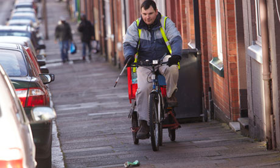

The Tin Can Man - 25/02/2013
Adrian Ablett is a little nervous about starting his new job. After being made redundant last year, the 40-year-old is pleased to have found work again but worried about the effect it might have on his ambition. The self-styled "can-man" of Leicester has been keeping himself busy out on the city streets three or four times a week for several hours at a time, picking up other people's rubbish like a 21st-century Womble. "In an ideal world I would do this 24/7," he said. "I genuinely love it and I'm out in all weathers."

He has specialised in aluminium drinks cans, which he removes from pavements, gutters, grass verges, bushes and parks and takes to a recycling centre. Since he began a little under three years ago, he has recycled 62,000 cans. Most were collected when he walked around on foot for several miles, pulling a heavy, modified wheelie bin. Now he has upgraded to a bike and trailer donated by a local bicycle repair shop and he hopes the extra power to his collecting elbow will enable him to reach his goal of 100,000 cans this year.
Ablett is just one of an army of litter vigilantes. Unpaid and unasked, they are ordinary men and women who have simply got so fed up with litter and mess that they have taken it upon themselves to do something about it. Many receive abuse for their trouble and others have run into problems with local councils that can sometimes take umbrage at unauthorised citizen clean-ups.
"The council hate me," said volunteer litter picker Owen Braines, who lives with his wife and three young children near Pool in Cornwall. "They really don't like it. It's such a shame, the lack of empowerment in the community that comes from councils sometimes. Nobody listens to you when you complain so it gets boring – so you roll up your sleeves and get on with it.
"The hardest thing now is that when I clear up a fly tip I have to pay for it as industrial waste when I take it to the council tip. And I do it because it's the right thing to do ecologically. I'm not a lunatic, I just don't think we should be wasting resources. I'm pretty poor but I'm passionate and I'm instilling the right values in my kids."
Britain has a massive rubbish problem; some 30 million tonnes is dropped on our streets every year. Along with dog mess, litter is the most complained about issue to MPs and local authorities, which spend some £500m a year picking it up. Rubbish is not just unsightly, it is a hazard to wildlife and the environment – some supermarket plastic carrier bags will take 500 years to decompose.
A BBC documentary to be broadcast this week talks to some of the hundreds of people who act as litter vigilantes. Meanwhile, websites such as litterheroes.co.uk spring up to reveal the true numbers of "pickers" out there alongside the increasingly popular community litter picks such as Keep Britain Tidy's the Big Tidy Up campaign, which aims to get people out a few days a year in their local areas for organised rubbish collecting. But many people keep a low profile about their public-spirited clean-up habits because of hostility from others.
"I do get the odd snigger or people laughing at me," said Ablett. "Most of the comments will be positive but you occasionally get a few comments like, 'It's not your job to do that'. Well no, it's not my job, but I enjoy it and it's the right thing to do. I am a real environmentalist and believe we should be recycling, not just dumping our rubbish on the streets. A can that's recycled can be back on a supermarket shelf again inside six weeks and it takes a lot less energy to recycle than to produce a new one. I enjoy doing it. Supermarkets don't care about the amount of packaging and rubbish that they produce, they just want to sell. If everyone did a little bit where they live what a difference that would make. You don't have to get as involved as I do."
In a little lean-to garage space near his bedsit, Ablett keeps the tools of his voluntary trade – high-visibility jackets in green, pink and yellow, and his bike. "I found those sheets when I was out picking," he says, indicating the corrugated plastic roofing. "You'd never believe the things I come across. I found an ATM machine in the bushes last week. Round here it's mostly beer and Coca-Cola cans. I have seen people toss their cans, but I don't ever approach them and say anything – you never know what would happen. I don't get involved like that."
In the documentary, a woman in Hampshire who invites people who drop litter to pick it up and put it in the bin is seen being harangued by a well-spoken passerby who tells her she "has no authority" to stop people and has clearly taken great offence at her actions.
But even pickers don't all agree on what they should or shouldn't be doing. Owen Braines, for example, won't touch dog faeces, saying it is natural and that the environmental damage is higher by wrapping it in a plastic carrier bag that then goes to landfill than just leaving it to decompose.
That is not the view of the pink flag lady of North Yorkshire, Jill Hirst. The dog owner was so fed up with her village being covered in dog faeces that she set up the Glusburn and Crosshills Dog Fouling Action Group. One of her campaigns involved putting homemade pink flags into every poo she found on one well-walked lane near her local primary school.
"We ran out at 53 and had to go and make more," said Hirst. Fed up with inaction from her council, she and her husband Matthew put up posts sporting homemade poo bag dispensers for dog walkers. "It's about pricking their conscience," she said.
But even if her fellow "picker" in Leicester doesn't agree with her litter target, they do agree that they would love to see everyone joining their vigilante spirit. "Good luck to the dog muck people but not for me thanks. But if I could inspire just one more person that would be really great," said Ablett. "We all can make a difference."
This article is 100% owned by The Guardian and is just used as an example of how this page could look, the image is by Andy Hall for the Observer. Original Article
 Twitter
Twitter